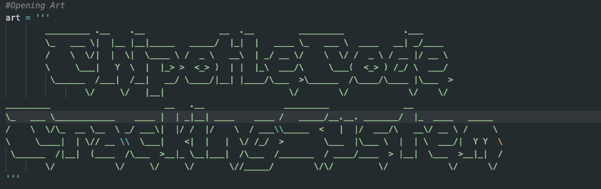

Working on it...

During the 2023 NBA Finals, Chipotle was running a promotion where everytime a 3-pointer was made, they would give out free burritos. They would do this by posting a picture of the code on twitter with some text. This script takes a screenshot while the page is reloading then uses a screen reader to read the text, then the text is parsed to find the code. The code is then copied to the clipboard and then it runs a shortcut on the hosts machine to send the code to a phone number.
